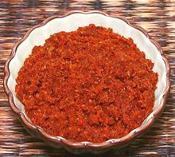

 |
Red Curry PasteThailand - Krueng Gaeng Peht | ||||
| Makes: Effort: Sched: DoAhead: |
5 oz *** 1-1/2 hrs Total |
In Thailand, this brick red curry paste is used more than any other. In hotness it's midway between the Yellow Curry Paste and the Green Curry Paste, so making it involves less suffering than the green. | |||
| Note: you will have fits of sneezing at certain points - this is normal - just tough it out. While some curry pastes are available commercially, what is commonly available in North American markets is "Red Curry Sauce", unsuitable for Thai Recipes - see our page Thai Red Curry Paste vs. Sauces. | |||||
|
|
----- 1 1 12 1/2 2 ----- 1 1 4 1 ----- 4 1/4 ----- 1 1 |
--- t T c --- T T t --- cl c --- t t |
-- Spice Mix Cumin Seeds Coriander Seeds Peppercorns Thai Chili, dry (1) California Chili (2) -- Galanga mix Galangal (3) Kaffir Lime peel (4) Lemon Grass stalk Cilantro root (5) -- Garlic mix Garlic Shallots ------------ Shrimp Paste (6) Salt |
All volume measures are after chopping small (chilis after breaking up a bit). This paste is traditionally made by pounding in a large stone mortar, and that's still really the best way for parts. See Note-7
|